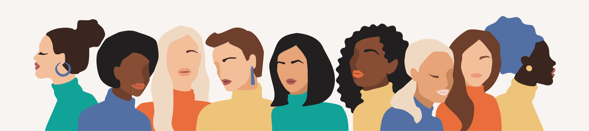

Divulgazione scientifica
Tre ricercatrici che raccontano la scienza
Se siete finiti qui, probabilmente vi interessa capire qualcosa che di solito viene raccontato male, o troppo di corsa. Noi la ricerca la facciamo di mestiere: Mada è nato nel 2020, accanto alle nostre carriere, per provare a spiegare quello che sappiamo con parole semplici, senza per questo renderlo semplicistico.
Scrivere, intervistare, andare nelle scuole
Sono mestieri diversi tra loro, e in questi anni li abbiamo praticati tutti e tre.
Gli articoli
Approfondimenti e rubriche su biologia, medicina, farmacologia e dintorni, sempre a partire dagli studi originali, citati per esteso in modo che chiunque possa andare a controllare.
Le Mada Talks
Interviste a scienziati e scienziate, ricercatori e ricercatrici, startupper, dottorande e dottorandi.
Le scuole e i festival
Incontri e webinar per le classi e per il pubblico dei festival, con un occhio alle donne nella scienza.
Lavorate con la scienza? Vi aiutiamo a raccontarla
Un comunicato, i testi di un sito, una brochure, un intervento a un convegno, un post. Capita spesso di dover spiegare una ricerca o un dato a qualcuno che non ha la vostra stessa formazione, e sembra la parte semplice del lavoro: di solito non lo è. Se volete, ce ne occupiamo noi, che quegli studi li sappiamo leggere.
Abbiamo collaborato con
Università, enti di ricerca e realtà della divulgazione con cui abbiamo lavorato negli anni. Cliccate su un logo per vedere di cosa si trattava.


Vi abbiamo incuriosito?
Se avete una ricerca, un progetto o un’idea da raccontare e non sapete da che parte cominciare, scriveteci. Vi risponderemo dicendovi con franchezza se è una cosa che sappiamo fare bene: quando non lo è, preferiamo dirlo subito.
Scriveteci una mail